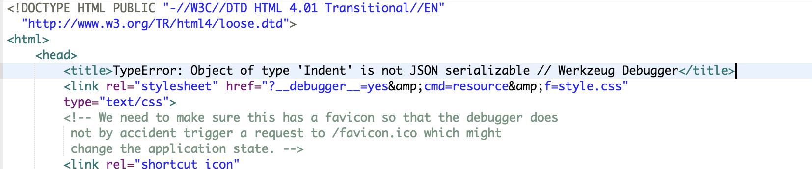
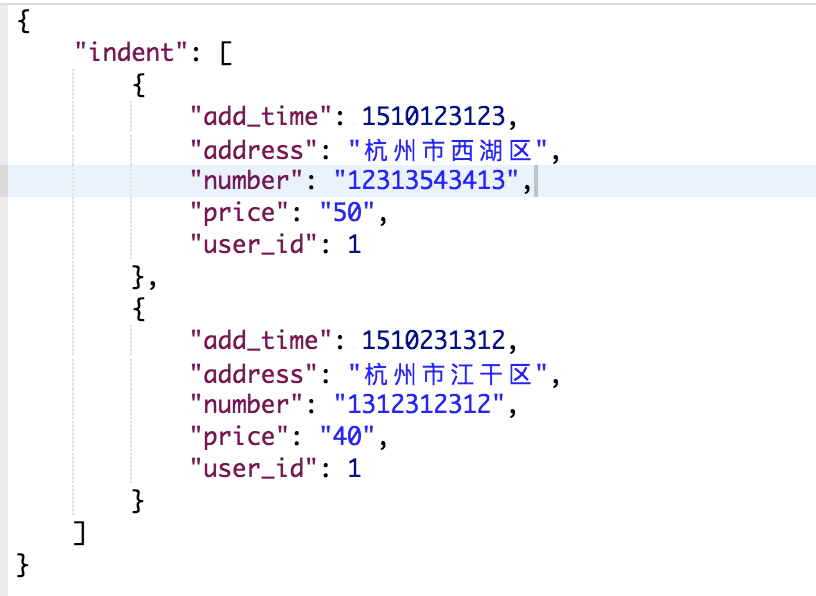

之前不管是java还是php，从数据库取出数据库对象之后，转换成json字符串总是很方便的。
但是在python的 flask框架却是没这么简单
flask对象列表序列化
就拿根据用户id取出订单为例：
1
2
3
4
5
6
7
8
9
10
11
12
13
14
15
16
17
18
19
20
21
22
23
24
25
26
|
class Indent(db.Model):
__tablename__ = 'x_indent'
id = db.Column(db.Integer,primary_key=True)
number = db.Column(db.String(255))
user_id = db.Column(db.Integer)
price = db.Column(db.String(255))
address = db.Column(db.String(255))
add_time = db.Column(db.Integer)
def __init__(self, number=None,user_id=None,price=None,address=None,add_time=None):
self.number = number
self.user_id = user_id
self.price = price
self.address = address
self.add_time = add_time
def insert(self, indent):
db.session.add(indent)
db.session.commit()
|
1
2
3
4
5
6
7
8
9
|
@mod.route('/indent',methods=['POST'])
def indent():
userId = request.args.get('userId')
indent = Indent.query.filter_by(user_id=userId).all()
return json.dumps(indent)
|
- json.dumps() 编码json数据
- json.loads() 解码json数据
但如果简单这样写的话，是会报错的，

Flask还有个内置的 jsonify()，
其中，jsonify的作用是，把dict或list转换为string(类似于json.dumps())。
在 database.py的 Indent类中加入这个方法
1
2
3
4
5
6
7
8
| def serialize(self):
return {
'number': self.number,
'user_id': self.user_id,
'price': self.price,
'address': self.address,
'add_time': self.add_time,
}
|
然后使用 列表推导 将对象列表转换为可序列化值列表:
1
2
3
4
5
6
7
8
|
@mod.route('/indent',methods=['POST'])
def indent():
userId = request.args.get('userId')
indent = Indent.query.filter_by(user_id=userId).all()
return jsonify(
indent = [i.serialize() for i in indent])
|
获得的json字符串

列表推导式
列表推导式可以使用非常简洁的方式对列表或其他可迭代对象的元素进行遍历和过滤，快速生成满足特定需求的列表，代码具有非常强的可读性，是Python程序开发时应用最多的技术之一。Python的内部实现对列表推导式做了大量优化，可以保证很快的运行速度，也是推荐使用的一种技术。列表推导式的语法形式为：
[表达式 for 变量 in 序列或迭代对象 if 条件表达式]
列表推导式在逻辑上等价于一个循环语句，只是形式上更加简洁。例如，
1
2
3
4
5
6
7
| aList = [x*x for x in range(10)]
aList = []
for x in range(10):
aList.append(x*x)
|
借鉴